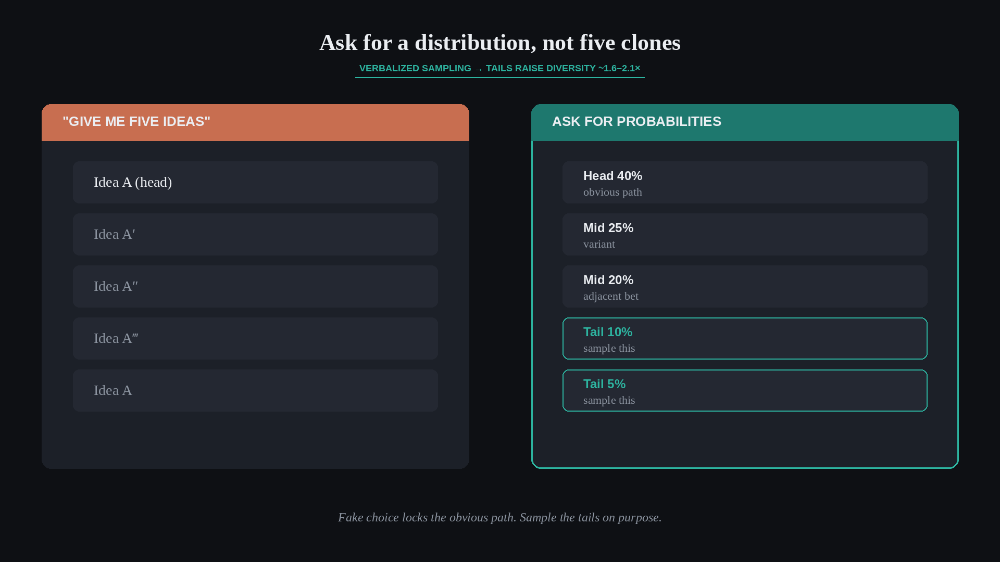

Ask for a distribution, not five clones
Source: George / prodmgmt.world (@nurijanian)
original post
What it claims
When you ask for five ideas, you often get one idea sampled five times from the head of the distribution. Verbalized sampling asks for a distribution with probabilities and samples from the tails — raising diversity about 1.6–2.1×. Same model; better prompt structure for genuine alternatives.
Why it matters for a PO
POs use AI and workshops to generate options for roadmap bets, experiments, and stakeholder choices. If “five options” are near-duplicates, you fake choice and lock onto the obvious path. Forcing a probability-weighted spread surfaces tail ideas worth testing — and makes trade-offs real in prioritization conversations.
3 takeaways
- “Give me five ideas” often yields five phrasings of one idea.
- Ask for a distribution: options + estimated probabilities, then sample from the tails.
- Use diversity as a discovery input — then apply kill criteria; volume of clones is not optionality.
Practice this week
For one live decision, prompt (human workshop or AI): “List 8 distinct approaches with rough probabilities that sum to ~100%; mark the two lowest-probability tails.” Bring those two tails into refinement or a stakeholder sync and decide deliberately whether to kill, park, or run a cheap test — not whether they sound polished.